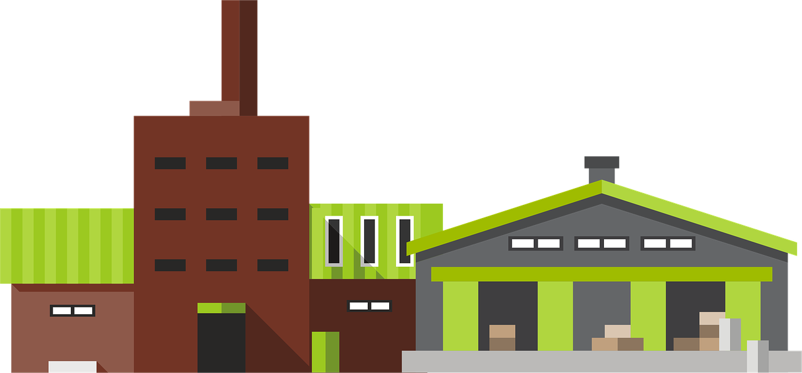
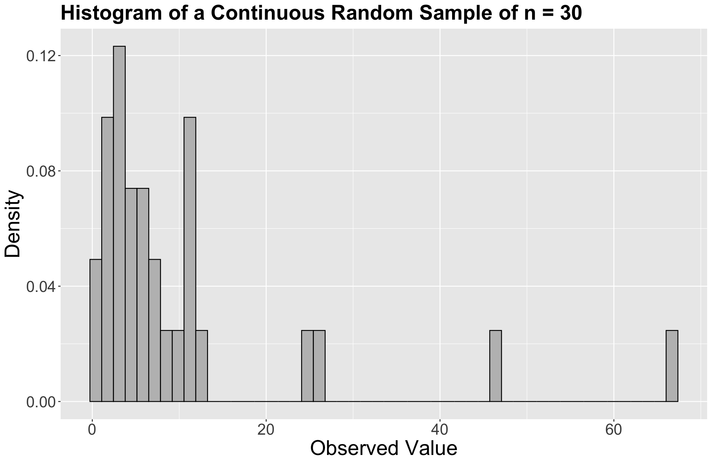
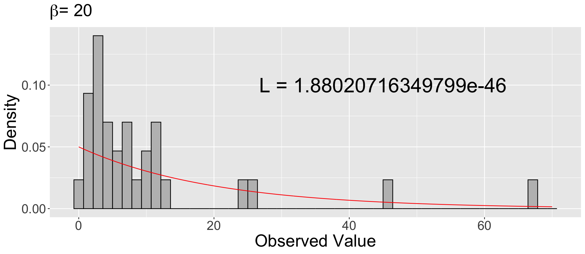
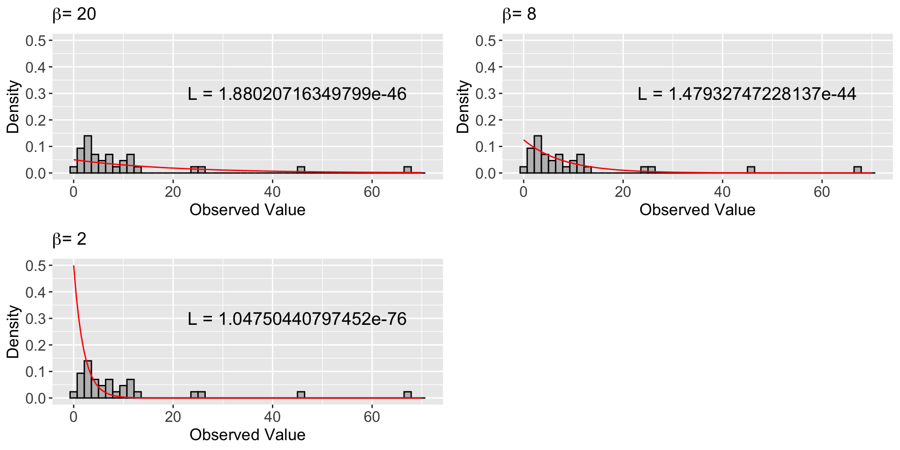
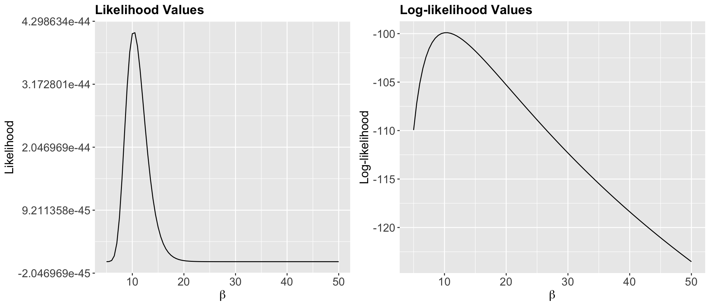
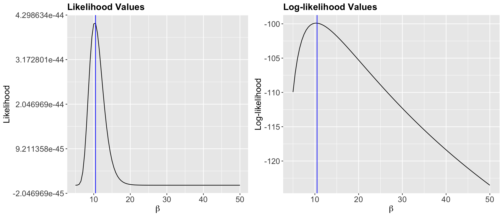
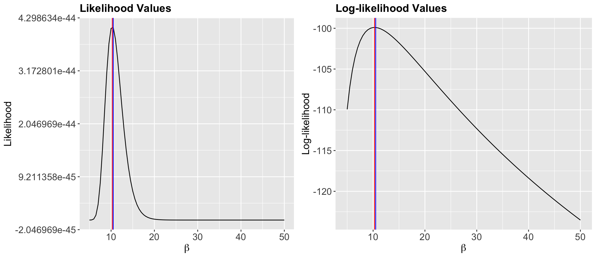

sample_n30 <- tibble(values = c(
24.9458614574341, 7.23174970992907, 4.16136401519179, 5.60304128237143,
5.37929488345981, 1.40547217217847, 7.0701988485075, 2.84055356831115,
0.894746121019125, 2.9016381111011, 3.19011222943664, 11.0930137682099,
3.49700326472521, 46.2914818498428, 2.00653892990149, 2.87363994969391,
11.4050390862658, 11.6616687767937, 12.8855835341646, 3.88483320176601,
0.406148910522461, 25.7642258988289, 8.4743227359272, 4.17410666868091,
1.84968510270119, 2.15972620035141, 10.5289600339151, 6.44162824716339,
10.6035323139645, 66.6861112673485
))Maximum Likelihood Estimation
Lecture 7
Please, sign in on iClicker
Moving on beyond probability (slightly)!
- Today’s topic is a fascinating statistical concept: estimating distributional parameters in a population or system using sample data.
- We will focus on maximum likelihood estimation (MLE).

Today’s Learning Goals
By the end of this lecture, we will be able to…
- Explain the concept of a random sample.
- Explain the concept of maximum likelihood estimation.
- Define the likelihood function for a parametric model and recall why we often take its logarithm.
- Apply maximum likelihood estimation for cases with one population parameter (i.e., univariate maximum likelihood estimation).
- Use
Rto implement maximum likelihood estimation by an empirical approach.
A Note on Plotting
- You will not be expected to make plots like those in these lecture notes.
- We will save that for the next block in DSCI 531: Data Visualization I.
Outline
- Random Samples
- Estimating true parameters!
- What is the definition of MLE?
- Can we apply MLE analytically?
1. Random Samples
A random sample is a collection of \(n\) random outcomes/variables.
Using mathematical notation, a random sample of size \(n\) is usually depicted with random variables \(X_1, \ldots, X_n\).
We think of data as being a random sample.
Independent and identically distributed!
- Unless we make additional sampling assumptions, a default random sample is said to be independent and identically distributed (or iid) if:
- Each pair of observations are independent, and
- each observation comes from the same distribution.
Why is sampling important in statistical practice?
- Populations or systems of interest are governed by fixed parameters (under a frequentist paradigm).
- Data from these populations or systems of interest can be modelled via diverse discrete and/or continuous distributions.
- These parameters are considered to be the true ones.
Estimation!
- We will never know these true parameters in practice, but we aim to estimate them via sampled data.
- Using our observed sampled data, we can perform the corresponding parameter estimation via MLE (for instance!) and then proceed to statistical inference.
2. Estimating true parameters!
MLE has these major characteristics:
- A random sample of \(n\) observations from the population or system of interest.
- Cases with only one parameter to estimate involve univariate MLE.
- Cases involving more than one parameter to estimate involve multivariate MLE.
- MLE provides you with a great way to find estimators, which are usually well-behaved (asymptotically speaking).
For example…
The sample mean:
\[\begin{align} \bar{Y} = \frac{\sum_{i = 1}^n Y_i}{n} \end{align}\]
is a trivial case with a very intuitive answer at first sight.
Still, this answer is backed up with interesting statistical modelling assumptions via MLE.
Important!
- Since the scope of this lecture is mostly about the conceptual understanding of the MLE process regarding distributional parameters, we will narrow down the attention to univariate cases.
- That said, in day-to-day statistical practice, this conceptual understanding can also be extended to multivariate cases for more complex data modelling.

2.1. A first example!
- Suppose we have an empirical distribution of standard deviations of gene expression for different genes.
- This empirical distribution belongs to a random sample of standard deviations.
- We would like to estimate the parameters from the population this sample is coming from!
The plots!

Image from Data Analysis for the Life Sciences (Irizarry and Love, 2016).
2.2. How can we do this?
- The same histogram corresponding to the observed random sample appears in each grid cell.
- Second, each orange line represents a given theoretical probability density function (PDF) under specific population parameters.
- Now, we might wonder:
What orange line fits the histogram better? Or in other words, what orange line makes the observed sample THE MOST LIKELY?
3. What is the definition of MLE?
- MLE is a method that, given some observed data and some assumed family of probability distributions, seeks to find values of the parameters that would make the observed data most likely to have occurred.
Empirical MLE Steps
- Firstly, we choose a family of theoretical distributions that we assume our observed sample data comes from.
- Next, we vary the parameter(s) for that parametric family of theoretical distributions to find a specific, single distribution that best fits the observed data. This resembles trial and error approach.
In our previous example..
- From the histograms, can we do it just by eyeballing it? Not precisely!
- So how can we do this? MLE is one way and it involves, as the name says, finding a maximum likelihood.
3.1. Some key MLE ideas…
- One crucial element to consider is the nature of our variable of interest (is it continuous or discrete?).
- Then, we aim to estimate the parameters of a theoretical distribution.
- Therefore, we need to make a distributional assumption for our data – at the family level, i.e., choose a distribution.
Then…
- We play around with the parameters for that family of distributions to find the one that would be most likely given our data and choose the corresponding parametric estimates.
- To obtain these estimates, we use the likelihood function of our observed random sample. This involves maximizing this likelihood function (which is an optimization matter!).
3.2. But, what is the likelihood function?
The Ice Cream Case!
- Imagine you are the owner of a large fleet of ice cream carts, around 900 to be exact.
- These carts operate across different parks in the following Canadian cities: Vancouver, Victoria, Edmonton, Calgary, Winnipeg, Ottawa, Toronto, and Montréal.
- Furthermore, suppose you have a well-defined overall population of interest for these cities: all our potential ice cream customers during any given Summer day.
- We will call the corresponding statistical query a time query.
Demand Planning
- Then Operations staff currently requires a realistic estimation of the average wait time from one customer to the next one in any given cart during Summer days in these eight Canadian cities.
- This average wait time would allow them to plan carefully how much stock each cart should have so there will not be any waste or shortage.

Sunny times!
- Summertime represents the most profitable season from a business perspective, thus, solving the time query is a significant priority for your company.
- Hence, you decided to organize a meeting with your eight general managers (one per Canadian city) by last mid-summer.
Urgent Meeting!
- It was first (and wrongly!) discussed to do the following:
Since the operations team has not previously recorded any historical data, ALL vendor staff from 900 carts will start collecting data on the wait time in minutes between each customer this upcoming Summer days of 2026.
Nonetheless…
- Ottawa’s general manager provides a comment for further statistical food for thought:
The operations protocol for recording wait times in the 900 vending carts looks too cumbersome to implement straightforwardly this upcoming Summer. Why don’t we select A SMALLER GROUP of ice cream carts across the eight cities to have a more efficient process implementation that would allow us to optimize operational costs?
Bingo!
- Ottawa’s general manager just nailed the probabilistic way of estimating our population parameter interest for our time query.
- There is a crucial insight on which statistical estimation is built: a random sample.
- A random phenomenon can be represented by any randomly recorded wait time between two customers during a Summer weekend in any of the ice cream carts of the above eight Canadian cities.
Summarizing!
- Population of interest: All our potential ice cream customers during any given Summer day in the following Canadian cities: Vancouver, Victoria, Edmonton, Calgary, Winnipeg, Ottawa, Toronto, and Montréal.
- Parameter of interest: Mean wait time in minutes between each customer during a given Summer (continuous and non-negative).
- Estimation: MLE via an observed random sample of \(n\) wait times across a representative small subset of the carts of the above eight cities. The company plans to run the sample data collection this upcoming Summer of 2026.
A pilot study!
- Since the Summer of 2026 is still far away, you decided to run a really small pilot study across the eight Canadian cities by the end of the past Summer (to define a robust sampling protocol).
- You implemented a quick simple random sampling from these eight Canadian cities overall and got a sample of size \(n = 30\) wait times in minutes (taken from a really small set of ice cream carts).
The sample data in minutes!
The empirical (sample) distribution!

How to model our waiting times?
- The Exponential distribution is a suitable distribution to model our waiting times.
- It is a continuous and non-negative distribution that allows us to model wait times.
- Therefore, we can go ahead with this distribution.
iClicker Question
Besides the Exponential distribution, what other suitable distribution can we used?
Select the correct option:
A. Poisson
B. Log-Normal
C. Binomial
D. Weibull
Exponential Parametrization
- In the context of our time query, the population mean wait time \(\beta > 0\) parametrization is the most suitable one.
- Therefore, we need to estimate \(\beta\).
- Suppose we have a random sample of size \(n = 30\) of the following independent and identically distributed (iid) random variables: \(Y_1, Y_2, Y_3, \dots, Y_{28}, Y_{29}, Y_{30}\)
- Moreover, given our distributional assumption, each random variable is modelled as: \[Y_i \sim \text{Exponential}(\beta) \quad \text{for } i = 1, 2, \dots 30.\]
iClicker Question
Answer TRUE or FALSE:
Assuming complete independence between the random variables of our sample of size \(n = 30\) across the eight Canadian cities is an entirely realistic assumption.
A. TRUE
B. FALSE
Moving along with our data analysis…
Each observation is \(y_i\) (\(i = 1, \dots, 30\)), such as the values in
sample_n30, with the following PDF: \[f_{Y_i}(y_i \mid \beta) = \frac{1}{\beta} \exp(-y_i / \beta).\]The lowercase \(y_i\) is not arbitrary; it refers to the observed value \(y_i\) in our random sample.
Estimating \(\beta\) through MLE
- Firstly, we choose a theoretical distribution that we believe our sample’s empirical distribution is coming.
- Here, we chose a distribution such as the Exponential given our right-skewed empirical distribution and the non-negative and continuous nature of our observed sample.
- In our random sample, we assume all the \(n\) observations are iid. This assumption leads to the following joint PDF: \[f_{Y_1, \dots, Y_n}(y_1, \dots, y_n \mid \beta) = \prod_{i = 1}^n \frac{1}{\beta} \exp(-y_i / \beta).\]
Where is the likelihood function?
- The likelihood function is a function of the parameters of a given/chosen theoretical distribution.
- It is equivalent (mathematically!) to the joint PDF of the random sample.
However, we must change our perspective: we do not know the population parameter, but the sample’s observed values.
Switching roles!
From our previous example with the joint PDF \(f_{Y_1, \dots, Y_n}(y_1, \dots, y_n \mid \beta)\), this implies: \[L(\beta \mid y_1, \dots, y_n) = f_{Y_1, \dots, Y_n}(y_1, \dots, y_n \mid \beta) = \prod_{i = 1}^n \frac{1}{\beta} \exp(-y_i / \beta).\]
\(L(\beta \mid y_1, \dots, y_n)\) indicates the likelihood of encountering our population mean wait time \(\beta\) GIVEN our observed sampled values \(y_1, \dots, y_n\).
3.3. How do we compute the likelihood in R?
- We will choose a few different Exponential distributions (by varying \(\beta\)).
- Secondly, we will calculate the likelihood for those distributions given the data we observed.
- And then, we will overlay those distributions on our empirical distribution (i.e., the histogram of
sample_n30) to see how they map together.
Trying with \(\beta\) values: \(20\), \(8\) and \(2\) minutes
- Recall we have our observed random sample of \(n = 30\) waiting times in
sample_n30:
Computing theoretical joint PDF with \(\beta = 20\)
- We will calculate the theoretical joint PDF of an Exponential distribution with \(\beta = 20\) minutes for a sequence of values (
x) from0to70by0.05.
Moreover…
- We also compute the joint likelihood value, under \(\beta = 20\) minutes, with our observed random sample of \(n = 30\) waiting times in
sample_n30: \[L(\beta \mid y_1, \dots, y_n) = \prod_{i = 1}^n \frac{1}{\beta} \exp(-y_i / \beta).\]
Overlaying density_20 on the sample’s histogram!
- We plot this theoretical density
density_20on top of the empirical (sample) distribution (i.e., the histogram).

Computing theoretical joint PDF with \(\beta = 2\) and \(8\)
Then…
- We compute the joint likelihood value, under \(\beta = 2\) and \(8\) minutes, with our observed random sample of \(n = 30\) waiting times in
sample_n30:
Comparing our three theoretical densities and their joint likelihood values!

3.5. Interlude: The wonders of log-likelihood
Likelihood values coming from sample_n30:
- For \(\beta = 20\):
- For \(\beta = 8\):
- For \(\beta = 2\):
The Log-likelihood Function
- We could make a logarithmic transformation on the base \(e\) for the likelihood function: the log-likelihood function.
Important!
- The use of the log-likelihood function is common in MLE for mathematical and numerical optimization purposes.
- We would not know the real value for \(\beta\).
- The previous empirical process, to estimate the value for \(\beta\), shows us that \(\beta = 8\) provides the maximum value (i.e., the least negative value) for the log-likelihood function from these three possible options.
This \(\beta = 8\) is the value under which our random sample is more likely (under the assumption of an Exponential distribution).
3.6. Finding the maximum likelihood and log-likelihood using a range of \(\beta\) values
- Let us calculate and visualize the likelihoods and log-likelihoods for a wide range of \(\beta\)’s (along with
sample_n30) and choose the specific value of \(\beta\) with the maximum likelihood and log-likelihood.
Note: Even though we will automatically try a wide range of \(\beta\) values to obtain the one that yields the maximum likelihood, this is an empirical solution, not an analytical solution.
Trying a whole \(\beta\) range
- What range? We will try a sequence \(5\) to \(50\) by \(0.5\).
- Note the following in the data frame
exp_values:- Each row in
possible_betasindicates a candidate value for \(\beta\) to try in our search for the maximum. - Column
likelihoodindicates the value of the equation exponential-likelihood with the \(n = 30\) observed wait times stored insample_n30$values. - Column
log_likelihoodindicates the logarithmic transformation on the base \(e\) of columnlikelihood.
- Each row in
In R
exp_values <- tibble(
possible_betas = seq(5, 50, 0.5),
likelihood = map_dbl(1 / possible_betas, ~ prod(dexp(sample_n30$values, .))),
log_likelihood = map_dbl(1 / possible_betas, ~ log(prod(dexp(sample_n30$values, .))))
)
exp_values# A tibble: 91 × 3
possible_betas likelihood log_likelihood
<dbl> <dbl> <dbl>
1 5 1.78e-48 -110.
2 5.5 2.78e-47 -107.
3 6 2.18e-46 -105.
4 6.5 1.03e-45 -104.
5 7 3.30e-45 -102.
6 7.5 7.85e-45 -102.
7 8 1.48e-44 -101.
8 8.5 2.32e-44 -100.
9 9 3.13e-44 -100.
10 9.5 3.75e-44 -100.0
# ℹ 81 more rowsThen …
- We plot the possible \(\beta\)’s against the likelihood and log-likehood of observing them given our data in
sample_n30:

What is the maximum?
- Reading off the graph is a bit difficult, so we will grab the maximum from data frame
empirical_MLE:
# A tibble: 1 × 3
possible_betas likelihood log_likelihood
<dbl> <dbl> <dbl>
1 10.5 4.09e-44 -99.9- Our empirical maximum likelihood estimate of the mean population wait time between customers is 10.5 minutes.
Indicating the empirical MLE of \(\beta\) as a vertical blue line!

Indeed, we have empirically found a maximum at 10.5 minutes!
In conclusion…
- Our population parameter to estimate: the mean wait time in minutes between each ice cream customer during a given Summer day.
- Our population is all our potential ice cream customers during any given Summer day in the following Canadian cities: Vancouver, Victoria, Edmonton, Calgary, Winnipeg, Ottawa, Toronto, and Montréal.
- Our pilot study with \(n = 30\) sampled wait times indicates that, on average, the estimated wait time between each ice cream customer is 10.5 minutes via empirical MLE.
4. Can we apply MLE analytically?
Yes, we can!
- And it will involve multivariate Calculus since we have an optimization problem.
- For the Exponential distribution, it can be shown that
\[\hat{\beta} = {\bar{Y}} = \sum_{i = 1}^n \frac{Y_i}{n},\]
which is the sample mean!
Let us start!
Recall that the \(i\)th Exponential observation (\(i = 1, \dots, n\)) has the following PDF: \[ f_{Y_i}(y_i \mid \beta) = \frac{1}{\beta} \exp(-y_i / \beta) \quad \text{for } i = 1, \dots n. \]
Since the \(n\) observations are assumed iid, the joint PDF is as folllows: \[ f_{Y_1, \dots, Y_n}(y_1, \dots, y_n \mid \beta) = \prod_{i = 1}^n \frac{1}{\beta} \exp(-y_i / \beta). \]
Then…
The joint likelihood function is mathematically equivalent to the joint PDF: \[ L(\beta \mid y_1, \dots , y_{n}) = \prod_{i = 1}^n \frac{1}{\beta} \exp(-y_i / \beta) = \frac{1}{\beta^n} \exp \bigg( -\frac{1}{\beta} \sum_{i = 1}^n y_i \bigg). \]
Now, we apply some logarithmic properties to obtain the log-likelihood function: \[ \log L(\beta \mid y_1, \dots , y_{n}) = -n \log (\beta) - \frac{1}{\beta} \sum_{i = 1}^n y_i. \]
Moreover…
- We take the first partial derivative, with respect to \(\beta\), of the joint log-likelihood function: \[\begin{align*} \frac{\partial}{\partial \beta} \log L(\beta \mid y_1, \dots , y_{n}) &= -\frac{n}{\beta} + \frac{1}{\beta^2} \sum_{i = 1}^n y_i \\ &= \frac{1}{\beta} \left(-n + \frac{1}{\beta} \sum_{i = 1}^n y_i \right). \end{align*}\]
Finally…
- Then, we set this derivative equal to zero and solve for \(\beta\):
\[\frac{1}{\beta} \left(-n + \frac{1}{\beta} \sum_{i = 1}^n y_i \right) = 0\] \[\frac{1}{\beta} \sum_{i = 1}^n y_i = n\] \[\hat{\beta} = \frac{\sum_{i = 1}^n Y_i}{n} = \bar{Y}\]
Indicating the analytical MLE of \(\beta\) as a vertical red line!
analytical_MLE <- mean(sample_n30$values) # We use the sample mean() function
round(analytical_MLE, 2)[1] 10.28

DSCI 551 - Descriptive Statistics and Probability for Data Science